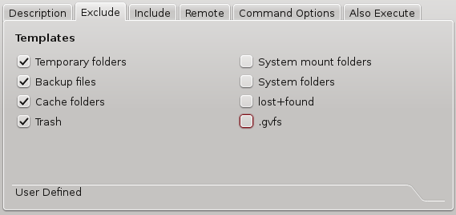
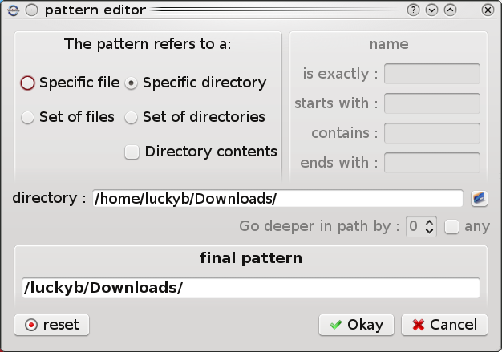
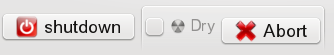
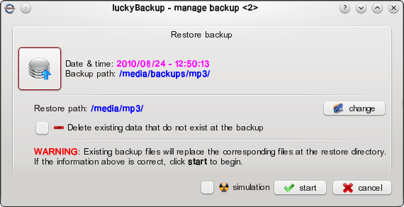

user's manual
contents
overview – features
luckyBackup is an application that backs-up and/or synchronizes any directories with the power of rsync.
It is simple to use, fast (transfers over only changes made and not all data), safe (keeps your data safe by checking all declared directories before proceeding in any data manipulation ), reliable and fully customizable.
Backup
Create a "clone"
of your data at another location in no time, safely.
Backup
any directory (source) to another (destination).
luckyBackup
copies over only the changes you've made to the source directory
and nothing more.
You will be surprised when your huge source
is backed up in seconds (after the first time !!).
Whatever
changes you make to the source including adding, moving,
deleting, modifying files / directories etc, will have the same
effect to the destination.
Owner, group, time stamps,
links and permissions of files are preserved (unless stated
otherwise).
Snapshots
Create multiple backup "snapshots".
Each snapshot is an image of the source data that refers to a specific date-time.
Rolling back to any of the snapshots is possible.
Sync
Sync any
directories keeping the files that were most recently modified on
both of them.
Useful if you modify files on more than one
PCs (using a flash-drive and don't want to bother remembering
what did you use last.
Keep your data
safe
luckyBackup first checks whether the directories
you've declared exist or if they are empty and warns you
accordingly.
You wouldn't want your 500GB music
collection backup (that took half a day to create !!) vanish in a
second if you forgot to mount the external drive that your source
is in !!
You also wouldn't want to execute an rsync command
if your destination folder is in an external drive that you also
forgot to mount.
Simple / advanced
option
The add/modify task dialog is quite simple and
everybody can use it with confidence.
Hit on the "advanced"
pushbutton at the task properties window and a whole bunch of
other options will appear.
If you know what you're doing
change anything at will.
Exclude option
Exclude
any file, folder or pattern from the transfer.
You might not
want to copy over backup files (*~), trash folders, system mount
folders (/media & /mnt), some huge video files or anything
else.
Choose from already made templates or produce your own with the cool pattern editor.
Only include
option
Use this option to only transfer over specific
file(s), folder(s) or pattern(s) within your source directory and
nothing else.
Add/remove any rsync
option
If you don't like the default rsync options that
luckybackup uses, add or remove any option you wish.
Remote
connections
Remote connections are possible, either for
use as a source or as a destination.
Also execute
You
can execute any command(s) before or after a specific task.
Restore
task
Everybody wishes to never use this !!
But when
this time comes, luckyBackup gives you the option to either go through a restore wizard or create a
task based on an existing one for restore purposes.
Simulation option
If
you are unsure of the effects on your data when executing an
rsync command try the dry-run option. luckyBackup will perform a
trial run that doesn't make any changes (and produces mostly the
same output as a real run).
Note: The progress-bar might be
misleading when using this.
Profiles
You
don't have to create all tasks from scratch every time you start
luckyBackup.
You can save your preferences in a .profile file and
load it whenever needed. Use as many profiles as you like, export, import or duplicate them.
Include option – Execution order
A separate check-box
can be used to include or not a task within a profile.
The option to change the execution order of tasks is also given.
Scheduling
Scheduling for execution of already created profiles via cronjobs is supported.
e-mail email a report after a profile execution.
Logfile Command line
mode Copyright
© 2008, Loukas Avgeriou Before we proceed to any
description or instructions, it would be useful to first make
some definitions:
task
For example the
task of backing up one directory to another. The basic
properties of a task are:
a. Its name
(for example “backup my home directory”). b.
Its include state which actually says if the task will
be executed or not. source The
directory that holds the data to be backed-up. destination The
directory that source will be backed-up to. profile A
collection of tasks at a particular order. snapshot Backup data that refer to the source
at a particular time. Just like a photo snapshot that captured a face at a specific time. schedule A
profile that is scheduled to be executed at a specific time,
at a specific day. super-user
mode The
execution of luckyBackup with super-user privileges. Command-line
mode The
execution of luckyBackup without a graphical user interface
(gui), by using a terminal. Silent mode The
execution of luckyBackup without launching the main window - just tray notification shown.
After this (small I hope) introduction, It is now time to launch luckyBackup.
Menu
Normal user
Super user
IMPORTANT:
Terminal arguments
$
luckybackup [options] [profile]
$
sudo luckybackup [options] [profile]
or $
su root
[profile]
... is an already created profile that is going to be executed instantly, either in gui or command-line mode, depending on the options provided.
[options] available options : --help Displays a “usage” help message --version Displays luckybackup's current version --skip-critical Will not execute tasks that appear with a CRITICAL
warning message after the data checks --dry-run Executes
luckyBackup in dry-run (simulation) mode --silent Executes
luckyBackup in silent mode ((just notification tray icon shown)) -c Console mode Executes luckyBackup in command-line mode --no-questions Executes luckyBackup in command-line mode and skips confirmation
questions asked to user. Implies -c (console mode).
manualy schedule:
For some reason, you might not wish to use the luckybackup's schedule feautre, to have some jobs scheduled.
env DISPLAY=:0 /usr/bin/luckybackup --silent --skip-critical /home/luckyb/.luckyBackup/profiles/EveryDay_jobs.profile examples: 1.
Execute luckybackup gui: $
luckybackup 2.
Execute luckybackup gui and run profile "BackupHome" immediately: $
luckybackup ~/.luckyBackup/profiles/BackupHome.profile 3.
Execute luckybackup gui and run profile "BackupHome" immediately in simulation mode: $
luckybackup --dry-run BackupHome.profile 4.
Execute luckybackup in silent mode and run profile "BackupHome" immediately. Skip all CRITICAL tasks: $
luckybackup --silent --skip-critical BackupHome 5.
Execute luckybackup in command-line mode and run profile "BackupHome" immediately: $
luckybackup -c BackupHome 6.
Execute luckybackup in command-line mode and run profile "BackupHome" immediately.
Do not ask any questions and Skip all CRITICAL tasks: $
luckybackup -c --skip-critical --no-questions BackupHome
man page
$
man luckybackup
This is the
application's main window as it appears as soon as you execute
luckyBackup. It
consists of :
A menu.
A toolbar that
refers to current profile handling.
The Task
List which lists all the available tasks of the current
profile.
3 buttons that
refer to specific task handling (add – remove –
modify).
A run button
and a simulation (Dry) check-box. You can start the execution of all
the tasks included in a profile by using these.
An information
window. It can be shown/hidden by using the arrows icon at its top left corner. ...Playing
around Tasks
All task
related actions are accomplished via the "task area":
or the menu →
Task: Add
Add a new task to
the current profile.
Press the add
button for the task properties dialog to appear. Remove
Remove an existing
task from the current profile:
Click on an task
name, inside the task list, to highlight it.
Press the remove
button.
Answer yes to the
dialog that will appear to permanently remove the task.
Modify
Modify an existing
task to your liking:
Click on an task
name, inside the task list, to highlight it.
Press the modify
button for the modify task dialog to appear. Duplicate
Create a duplicate of the highlighted task and add it to
the current profile.
Select Task-> Create Duplicate Task from the menu.
Change anything (if) you wish at the
task properties dialog
that will appear and click ok: Create Restore task
Create a restore task of the highlighted task and add it to
the current profile.
Select Task-> Create Restore Task from the menu.
Please have a look at the
restore section
of this manual for full reference to the restore procedures.
All profile
related actions are accomplished via the toolbar:
or the menu →
profile: Current
Profile – profile load
The profile you
are currently using is displayed at the drop-down list, on the
left of the toolbar.
To change the
current profile simple select another one from the list.
The information
window will display a message: Save
To save the
profile you are currently using, press the save button at the
toolbar, or select profile → save from the menu, or press
ctrl+S. Default
profile
The default
profile is the profile loaded as soon as luckyBackup starts.
Normaly the name
of the default profile is “default”. To change that, select profile →
Default from the menu. Rename
To rename the
profile you are currently using, select profile → rename from the menu. Delete
To delete the
profile you are currently using, press the delete button at the
toolbar, or select profile → delete from the menu. New
Create a new
profile: Press
the “new profile” button or
select
“Profile → new” from the menu or
press
ctrl+N.
Enter the name of
the new profile at the dialog that will appear and press ok. Duplicate
Create a duplicate of the current
profile:
Select
“Profile → Duplicate” from the menu
Enter the name of
the new duplicate profile at the dialog that will appear and press ok. View/Edit Description
View or edit the profile's description:
Select
“Profile → View/Edit Description” from the menu
Enter any text to use as a profile description and press ok. Export
You can export the
current profile as a folder to any location.
Select “Profile
→ export” from the menu.
The following
dialog will appear
Navigate to the directory you wish to export the profile to.
Type a file-name
for your profile or select an already existent profile to
replace it.
Press the save
button
Note that
you do not have to type the “.profile” extension. It will be
added automatically.
Also have in mind
that the default directory where profiles are located is
inside the user's home directory, under the folder
“~/.luckyBackup/profiles”. Import
To Import a
profile from another location:
Select “Profile
→ import” from the menu.
The following
dialog will appear.
Navigate to the directory you wish to import the profile from.
Select the
profile you wish to import.
Click the open
button to finish the procedure. Together with the .profile file, luckybackup will also import all relevant snapshot and log data, if available. Refresh
To refresh the
current view, simply click the refresh button, or select profile
→ refresh from the menu or press F5.
Create new, modify
or remove existing luckyBackup schedules
Click the
schedule button at the toolbar or select profile → schedule
from the menu, for the schedule dialog to appear
Start the
execution of all included tasks of the current profile.
You have 2 options
to do this:
a. Normal
execution. For real data transferring
Click the “Run”
button.
b. simulation.
Perform a dry-run execution of all included tasks of the current
profile. If
you are unsure of the effects on your data when executing an
rsync command try the dry-run option. luckyBackup will perform a
trial run that doesn't make any changes (and produces mostly the
same output as a real run). Note:
The progress-bar might be misleading when using this. WARNING:
Any pre/post task execution commands, will run normaly, not simulated. Check
the “Dry” check-box to
enable this option. Click
the “run” button
about
Display the
“about” dialog
Select “Help →
about” from the menu.
Do not forget that
this is free software. Help
Display this
manual
Select Help →
Help from the menu or
Press F1. Language
If you wish to
change the language of the application:
Select Settings →
Language from the menu
Click on the
language you wish to use Toolbar settings
Change the display of the toolbar:
Select Settings →
Toolbars from the menu
Select the options you wish.
In order to exit
luckybackup:
Click the EXIT
button, located at the actions toolbar or
Select Profile →
Quit from the profile menu or
Press ctrl+X Do
not worry about losing your profile if not saved when exiting the
application. As
already seen at a previous chapter the basic properties of a task
are its name and its include state. Of
course this specific task actually does something (e.g transfers
data from the source to the destination). Although this might
seem simple, a lot of parameters are involved in the way this
can be accomplished. Let's
have a deeper look at a task's properties by... creating
a new task As
soon as you click the “add” task button the following dialog
appears: First
thing you have to do is enter a name for this new task. Click
on the “Task name” text field and type a name for the task.
For example if you wish to backup the home directory of your
sidux distribution, a good name would be “Back up my sidux home
directory”. Actually,
there is no such thing as a “good name”. Type anything that
suits you best with no restrictions :-)
type
The next thing you have to
define is the task type. There are 2 types available:
1. Backup source inside destination
Select this type to create a backup of the source inside the destination directory.
do NOT create extra directory check box
Check the box to backup the
contents of a directory, not the directory itself.
In simple words, to copy over,
all the data that the source contains inside the destination.
Leave the box unchecked to backup the source
directory by name.
This means that a new directory
with the same name as the source will be created (if not already
there) inside the destination.
Example:
Let's assume that you create a
task and declare:
source = /home/luckyb/photos/
(that contains a large number of files)
destination =
/media/backups/pictures/
If you check the “do NOT create extra directory” box, then all files and folders from inside
/home/luckyb/photos/, will be copied inside
/media/backups/pictures/.
If you leave the box unchecked, then you will end up with the directory
/media/backups/pictures/photos/ (the whole source directory will
be copied inside the destination).
Use this task type in order to
sync the source with the destination by keeping the most recent
files at both of them.
It can prove really useful if
you modify specific files from different locations.
Example:
Let's assume that you are
working on a project. You have created the directory
/home/luckyb/project at your home PC and save all relevant files
in there. At the same time there is a need to work on some of
these files at another PC, so you copy them at your usb flash
drive (location: /media/myUSB/project).
There are times when you do not
remember which file you edited when and from where. So you create
a task declaring:
source: /home/luckyb/project/
destination:
/media/myUSB/project/
task type: “sync directories”
This will result in a 2-way
transfer. Newest modified files will be transfered from source to
destination or the other way round. Also freshly created files at
one of the locations will be copied over to the other.
Please note that if you
delete files at either the source or the destination and you
perform this task, you will end up with these files created again
because they still exist at the other location.
After
defining the name and the type of the task, you have to define
the source. That means the directory that holds the data that are
going to be backed-up. You can do that in 2 ways: 1.
Click on the “source” text field and type the full path
of the source directory. For example /home/luckyb. 2.
Click the “browse locally” button, located at the
right of the source text entry field. A normal file dialog will
appear. Navigate to the directory you wish to use as a source and
press the “choose” button
Declare a directory to use as a
destination, the same way as the source declaration procedure.
This is the directory where the source will be backed-up to. For
the “Backup my sidux home directory” example this could be
/media/backups/siduxHome.
why can't I declare my remote place ??
Every time a task is run the source data are backed-up as they are at that specific time.
Below is a screenshot of the
task properties dialog, with the name, source and destination
fields, ready.
As soon as you are finished
declaring all appropriate fields, click the “okay”
button.
If there are errors, you will
be informed by the application.
For safety reasons, if you have chosen "Backup the contents of the source directory" as task type, you will face the following WARNING message:
This is a reminder that the destination directory will finaly become a "clone" of the source.
Any irrelevant-to-the-source data it might contain, will be lost !!
Next, the main window will
regain focus, displaying the task you just created.
Note that the default
include state of a freshly created task is FALSE (not
included)
The task properties, as
discussed at the previous chapter, are quite simple and
straightforward. Now, it's time to have a much deeper look. If
you haven't done it already (out of curiosity), do it now. Go
ahead and press the advanced pushbutton at the “task
properties” window. This will result in a resizing of the
window and a display of much more information. It is not as complicated as
it looks !!
You can optionaly add a description for the current task here.
This
feature, allows the exclusion of certain file(s), folder(s),
pattern(s) from the task. Everything declared here, will not be a
part of the data transfer. It will be skipped.
NOTE that the this feature will be disabled if you select the Only Include option. The
Exclude tab is divided to: 1.
Templates Use
the checkboxes to exclude the following at will: Temp
folders. All
folders named tmp.
These are directories that are used for storing temporary data
that you would not mind losing. For example /tmp. pattern
used: **/*tmp*/
cache folders.
All folders named cache.
These folders are used by various application or systems for
storing cache data. Your browser for example, uses a cache
folder.
pattern used: **/*cache*/
& **/*Cache*/
backup files.
Backup files created by
various applications. These are files whose filenames have a
trailing “~”. For
example if you open the text file “LotsOfText.txt” for
editing, make changes and save it, then apart from the main
file, another one will be created named “LotsOfText.txt~”.
This is identical to the pre-modified “LotsOfText.txt” and
is created automatically for backup/safety purposes.
pattern
used: **~
mount directories.
System normal mount points.
These would be /media and /mnt.
If you decide to use your “/” directory
as source, then it would by wise to check this for various
reasons. The most important one is to avoid backing up the
destination onto its self!! Usually, the destination is a hard
disk partition, different from the one that your distro is
installed and your root directory (“/”) is located. This
will be normally mounted at point /media or /mnt.
Please see the WARNING at the
end of this chapter.
patterns
used: /mnt/*/**
& /media/*/**
lost+found.
System folders named
lost+found.
pattern used: **/lost+found*/
system folders.
These would be /var/run, /run,
/proc, /dev and /sys.
Again, you can use this option if you decide to backup your root
folder (“/”).
If it does not suit you and you want your own defined
directories to be excluded, feel free to leave this unchecked
and use the “user defined” way to declare anything.
patterns
used: /var/**,
/run/**,
/proc/**
, /dev/**
& /sys/**
Trash.
Directories named trash.
These are directories where files that you delete are stored.
patterns used: **/*trash*/
& **/*Trash*/
.gvfs
Directories named .gvfs.
Normally, these are hidden directories inside home folders.
pattern used: **/.gvfs/
Example of an “Exclude” tab
:
 2.
User defined
You can declare
anything you wish to be excluded from the task by adding it to
the “exclude list” in the following way:
Use the text
field located next to the add button to enter what is going to
be excluded. If you find it handy, use the "launch pattern editor"
button, located at the right of the text field, to open the
graphical pattern editor.
Press the add
button (or ENTER), to add the entered text to the exclude
list.
Remove an item:
click on it to highlight it
click the remove button.
Edit an item:
click on it to highlight it
click the edit button.
Change the item by using the keyboard.
click the done button.
Move an item:
click on it to highlight it
click the move up or down button.
Patterns can also be read from a file !!
An exclusion can
be a file, a directory or a list of files/directories that
follows a pattern.
Anything
you add as an exclusion must follow the
pattern rules, as
described at the end of the chapter.
WARNING DO
NOT FORGET TO EXCLUDE THE DESTINATION It
is possible sometimes, for the destination to be included in the
source. Meaning that the destination directory is a part of the
source hierarchy of files. examples: source
is your root directory (“/”) and destination is
/media/backups/ source
is your home directory and destination is /home/username/backup/ This
will result in unwanted data transfer. The destination will be
backed-up onto itself !! To
avoid such circumstances, do not forget, to add as an exclusion
the destination directory or a folder that contains the
destination directory.
Use this feature, to define specific file(s), folder(s) or pattern(s) to be included by the transfer.
1. Only include
Use this mode to backup/sync only specific file(s), folder(s) or pattern(s). For
example, you might not want to backup a whole directory structure
but just a single file ...or
a single directory
...or
2 single files and all the open-office writer documents within
this directory structure Everything that you declare here, and only that,
will be taken into consideration when performing data transfers
of the specific task and nothing more. NOTE that if you enable this option, the Exclude feature will be disabled.
2. Normal include
Use this mode, to define file(s), folder(s) or pattern(s) that will not be excluded by the transfer. Add
You can declare
anything you wish to be included by the task, by adding it
to the “include list” in the following way:
Use the text
field located next to the add button to enter what is going to
be included. If you find it handy, use the "launch pattern editor"
button, located at the right of the text field, to open the
graphical pattern editor.
Press the add
button (or press ENTER), to add the entered text to the
“only include” list.
Remove an item:
click on it to highlight it
click the remove button.
Edit an item:
click on it to highlight it
click the edit button.
Change the item by using the keyboard.
click the done button.
Move an item:
click on it to highlight it
click the move up or down button.
Read from file
Include patterns can also be read from a file !!
An inclusion can
be a file, a directory or a list of files/directories that
follows a pattern.
Anything
you add as an inclusion must follow the pattern
rules,
as described at the end of the chapter.
luckyBackup
uses some default rsync options to perform tasks. That is not
obligatory. You can remove any option and add others as you wish
by using the Command Options tab. This is divided in 2
sections Templates Here,
you will find normal checkboxes. These refer to some typical
rsync options. Simply
click a box to change its check state, so that to use or not the
option(s) it refers to. The
checkboxes provided and the relevant options they refer to are as
follows: Skip
newer destination files refers
to: -u,
--update
Delete files on the
destination refers to:
Recurse into directories
refers to:
Preserve ownership, times
refers to:
Preserve permissions
refers to:
Preserve symlinks
refers to:
Preserve device, special
files refers to:
Preserve hard links
refers to:
Ignore files the CVS way
refers to:
Destination is FAT/NTFS
refers to:
Use numeric group & user IDs
refers to:
Attempt super-user activities
refers to: Add
You can add any
rsync option you wish by adding it to the options list
in the following way:
Use the text
field located next to the add button to enter the option you
would like to add.
Type the option,
starting with a “-” or a “--” (without the
quotes), followed by the appropriate string. Do not enter
spaces.
Example: “
--xattrs ”
Press the add
button (or press ENTER), to add the entered option to the
“options” list.
Remove
Remove an item:
click on it to highlight it
click the remove button.
Edit an item:
click on it to highlight it
click the edit button.
Change the item by using the keyboard.
click the done button.
Move an item:
click on it to highlight it
click the move up or down button. NOTE:
Please refer to the man page of rsync for a complete
reference of all possible options. It
is possible to use luckyBackup, not only for local transfers, but
also for remote ones. Data
transferring either to or from a remote host is possible. Tasks
between 2 remote hosts is not supported. To
use this feature, simply check the Use remote host box located on top of the
Remote tab. Source
or Destination First,
specify whether you want to use a remote host for your source or
destination data by choosing an appropriate radio-button, located
at the top of the Remote groupbox. Please
note, that the directory located at the remote host and
will be used by luckyBackup as source or as destination, has to be declared at the appropriate text-edit fields, labeled
source or destination accordingly,
that are visible at “task properties - simple mode”. user Enter
your username for the remote host at the user text-field. host Enter
the name of the remote host you would like to connect to, at the
@Host text-field. Note
that a host name can also be an ip address. host
names examples: freehosting.net 89.70.191.201 remote
module Connecting
to an rsync module. If
you are contacting an rsync daemon at the remote system directly
via TCP, then check the Remote module box. Some
modules on the remote daemon may require authentication. luckyBackup,
does not support either the definition of passwords as a task
property (for security reasons), or the entry of passwords when
prompted at the stage of a task execution (because it is possible
for the specific task to be scheduled). If
a password is required by the remote daemon, then you have to
create a password file and declare it at the relevant
text-field (use the browse button to open a graphical file dialog
and select your already created file). The
password file must not be world readable and it should
contain just the password as a single line. Please
do not confuse the password to connect to an rsync module with
the password needed if you use ssh as a transport shell. ssh If
you use ssh as a transport shell to connect to the remote host
then check the ssh box. As
clearly stated above (at the remote module section): luckyBackup,
does not support either the definition of passwords as a task
property (for security reasons), or the entry of passwords when
prompted at the stage of a task execution (because it is possible
for the specific task to be scheduled). For
an ssh connection to become possible, you have to do all actions
needed for a password-less connection, using an
OpenSSH key pair. However,
if you still wish to use a direct password or protect your key
with a passphrase, then you have to either: Some
helpful information on this ssh
authentication scheme follows: The
public key authentication scheme is based on public-key
cryptography, using cryptosystems where encryption and decryption
are done using separate keys, and it is unfeasible to derive the
decryption key from the encryption key. The
idea is that each user creates a public/private key pair for
authentication purposes. The server knows the public key, and
only the user knows the private key. ssh implements public
key authentication protocol automatically, using either the RSA
or DSA algorithms. The file ~/.ssh/authorized_keys lists the
public keys that are permitted for logging in. When the user logs
in, the ssh program tells the server which key pair it
would like to use for authentication. The client proves that it
has access to the private key and the server checks that the
corresponding public key is authorized to accept the account. example: To
create an appropriate public-private key pair, use the command $
ssh-keygen When
prompted to enter a passphrase, just press “ENTER” twice (no
passphrase). This
stores the private key in ~/.ssh/identity (protocol 1),
~/.ssh/id_dsa (protocol 2 DSA), or ~/.ssh/id_rsa (protocol 2 RSA)
and stores the public key in ~/.ssh/identity.pub (protocol 1),
~/.ssh/id_dsa.pub (protocol 2 DSA), or ~/.ssh/id_rsa.pub
(protocol 2 RSA) in your home directory. Then
copy the public key to ~/.ssh/authorized_keys in your home
directory on the remote machine. The authorized_keys file
corresponds to the conventional ~/.rhosts file, and has one key
per line, though the lines can be very long. After this, you can
log in without giving the password. Please
refer to the man page of ssh for a complete reference of ssh
connections. Enter
the full path of your private key file at the private key file
text-field (use the browse button to open a graphical file
dialog if you wish). Finally,
specify the port to connect to, on the remote host, by entering
its number at the port text-field. Leave it blank for the
default ssh port (normally no.22).
This
option is used for the situation that you wish to run some
commands before and/or after the task execution.
add
Remove an item:
click on it to highlight it
click the remove button.
Edit an item:
click on it to highlight it
click the edit button.
Change the item by using the keyboard.
click the done button.
Move an item:
click on it to highlight it
click the move up or down button. STOP check boxes
On the left side of every command, there is a check-box available. Repeat on Fail
This option allows any command that fails, to run again. The re-run times number is set by using the spinbox. by-pass warning
Checking this box means that all security checks that refer to this task will be skipped.
BEWARE:
Only use this option if you really (I mean really) know what you are doing.
WARNING
: The Dry-run feature
only affects the main task and NOT
pre/post command which are going to be executed normaly !!. complex commands
Please note that luckybackup only supports the direct declaration of a command and its arguments. Complex command syntax is not (yet) supported.
Validate The
validate
pushbutton can prove useful, if
you wish to perform some initial checks to all the fields you
have declared at the task properties window. As
soon as you click the validate
button, a pop-up
message will apear, informing you of any errors or warnings
found. In
addition to this, it will display the actual command that is
going to be executed.
Patterns
entered in the “Task properties” window must follow these
rules:
After
all tasks execution, a logfile is created in your home folder.
You can have a look at it any time you want.
A handy logviewer that displays errors in red and has next/previous buttons, is also provided.
luckyBackup can run in command line if you wish not
to use the gui, but you have to first create the profile that is
going to be executed.
Type "luckybackup --help" at a
terminal to see usage and supported options.
legal luckyBackup is distributed under the terms of the GNU
General Public License.
luckyBackup is distributed under the terms of the GNU
General Public License.
It is free software: you can
redistribute it and/or modify it under the terms of the GNU
General Public License as published by the Free Software
Foundation, version 3 of the License.
It is distributed in
the hope that it will be useful, but WITHOUT ANY WARRANTY;
without even the implied warranty of MERCHANTABILITY or FITNESS
FOR A PARTICULAR PURPOSE. See the GNU General Public License for
more details.
launch
It is always a good thing to have multiple options and the ability to choose.
That is why, there are various ways to do that:
The easiest way to launch luckyBackup is by using your operating system's menu items.
Please note that 2 items are created.
The first one is used to launch luckyBackup as a normal user.
This is created under Utilities (kde) or Accessories (Gnome) or Applications -> File Management (Debian menu).
Use this method, if the normal user has full read access to the source and full write access to the destination.
The second one is used to launch luckyBackup as a super-user.
This is created under System (kde) or System Tools (Gnome) or Applications -> System -> Administration (Debian menu).
Fedora users, must install the "beesu" package to use the system menu link.
Use this method, if the normal user has limited read access to the source or limited write access to the destination.
luckyBackup copies files preserving their owner, group, times, permissions and attributes.
You should run it with su privileges if you want to
luckyBackup can also be launched by using a terminal (console).
The full syntax of the command used is :
If no options or profile
is provided, the main window will show, the same way as if you used the menu items .
Launching with super-user privileges, is possible by using normal bash commands to gain root access.
eg
Password: XXXXXXX
# luckybackup [options] [profile]
Profile files are normaly located under your home directory (~) at ~/.luckyBackup/profiles.
NOTE that the root's home directory is /root.
As [profile] you can use :
eg: ~/.luckyBackup/profiles/default.profile
Then, luckyBackup will search at the normal profiles location, under the home directory of the current user.
eg: default.profile
Again, luckyBackup will search at the normal profiles location, under the home directory of the current user.
eg: default
Instead you might want to manualy configure your system to execute luckybackup by using cron or anacron or a bash script or anything.
If that is the case, it is recommended to use the --silent together with the --skip-critical option to run luckybackup in
silent mode.
Something else that should be taken into consideration is that for the silent mode to run, a graphical environment is needed.
For that purpose the environmental variable DISPLAY should be defined.
An example, a luckybackup crontab entry follows:
A man page (system's manual page) is available at section 8 (System administration commands).
To view it, enter the following command:
the
main window


Together with the .profile file, luckybackup will also export all relevant snapshot and log data.

You will be prompted accordingly.
task
properties (the simple way)
Depending on the state of the following checkbox, you can define whether an extra directory will be created inside the destination or not.
2. synchronize source &
destination
Auto-completion as you type is enabled by default.
Today's file managers like nautilus, konqueror or dolphin have the ability to directly support some remote filesystem protocols such as smb/cifs or nfs.
You might be able to browse some remote places via your filebrowser but cannot find a way to declare those as source or destination.
This does not necessarily mean that the remote place is locally mounted. You can distinguish such a situation by observing the full path address of the remote folder. If it does not start with "/" but with eg smb:// then you are using the direct filesystem browser support.
The solution to this issue is to mount the remote place locally.
This involves, adding a line at the file /etc/fstab so that the remote directory can be visible under a specific mount point eg /media/my-Remote-Place/
It is not the purpose of this document to describe every possible mount procedure. Please refer to your distro's documentation or support web pages for guidelines.
This is called a snapshot !!
luckyBackup can hold a number of snapshots so that it is possible to revert to any one of them.
Define the maximum number of snapshots you wish to keep, by clicking on the arrows of the spin-box.
If that number is reached, older snapshots will be deleted when the task is run again.
The default number of snapshots to keep is 1.
task
properties (for the unsatisfied)
This description will be displayed at the main window, as soon as a task is selected and can provide useful information without the need to open the task-properties dialog.

This file must contain one exclude pattern per line. Blank lines and lines starting with ‘;’ or ‘#’ are
ignored.
There are 2 modes of operation available:
concept - theory:
As the list of files/directories to transfer is built,
luckybackup checks each name to be transferred against the list of include/exclude patterns in turn,
and the first matching pattern is acted on:
if it is an exclude pattern, then that file is skipped;
if it is an include pattern then that filename is not skipped;
if no matching pattern is found, then the filename is not skipped.
Note that, when using the "recurse into directories" option, every subcomponent of every path is visited from the top down,
so include/exclude patterns get applied recursively to each subcomponent's full name (e.g. to include “/foo/bar/baz” the subcomponents “/foo” and “/foo/bar”
must not be excluded).
The exclude patterns actually short-circuit the directory traversal stage when luckybackup finds the files to send.
If a pattern excludes a particular parent directory, it can render a deeper include pattern ineffectual because luckybackup did not descend through that
excluded section of the hierarchy. This is particularly important when using a trailing ‘*’ rule. For instance, this won't work:
include: /some/path/this-file-will-not-be-found
include: /file-is-included
exclude: *
This fails because the parent directory “some” is excluded by the ‘*’ rule, so luckybackup never visits any of the files in the “some” or “some/path” directories.
One solution is to ask for all directories in the hierarchy to be included by using a single rule: “include: */”, and perhaps use the --prune-empty-dirs option.
This technique is used at the only include mode.
Another solution is to add specific include rules for all the parent dirs that need to be visited. For instance, this set of rules works fine:
include: /some/
include: /some/path/
include: /some/path/this-file-is-found
include: /file-also-included
include: *
This file must contain one include pattern per line. Blank lines and lines starting with ‘;’ or ‘#’ are
ignored.
Moreover, rsync will compare the timestamps of files and decide if it will trigger a transfer. These timestamps are treated as being equal if they
differ by no more than the modify-window value. Windows filesystems represent times with a 2-second resolution. This sometimes leads
to rsync always performing data transfer although it shouldn't. To avoid this, the modify-window is set to a larger value.
Note that the following options:
By default rsync will use the username and groupname to determine what ownership to give files. The special uid 0 and the special group 0 are never mapped via user/group names even if the --numeric-ids option is not specified.
These activities include: preserving users via the --owner option, preserving all groups (not just the current user’s groups) via the --groups option, and copying devices via the --devices option.
This is useful for systems that allow such activities without being the super-user, and also for ensuring that you will get errors if the receiving side isn’t being run as the super-user.
1. Execute luckybackup from a terminal. Then, you will be prompted to enter your
password/passphrase at that terminal and not via the gui. or...
2. Use the ssh-askpass tool (other variations such as ksshaskpass or ssh-askpass-gnome are possible).

Check this to stop the task execution if the command exits with an error.
command is any pre-task, main rsync or post-task command.
fail, when referring to pre or post task commands, means that the command exited with an exit status other than 0 (zero) or it completely failed to start.
When it refers to main rsync commands, a fail means that the command failed to start completely or it exited with one of the following errors:
5 - Error starting client-server protocol
12 - Error in rsync protocol data stream
30 - Timeout in data send/receive
35 - Timeout waiting for daemon connection
255 - unexplained error
The task will run even if it appears with a WARNING message.
The checks by-pass, can be used when some pre-task execution commands can overcome possible warnings (eg mount a partition).
This includes the use of pipelines (|) or backtits (`) or even redirect of a command's output with ">".
If you wish to use a "complex" syntax please create a bash script that contains your command(s) and enter the name of the script at the "also execute" field.
Click the copy command to clipboard button to be able to paste it wherever...
Click the Okay button to close this dialog.
The pattern editor makes the definition of patterns much easier (...for some people).
You can just select the options you wish, using a graphical user interface (gui)
and a pattern will be produced automatically and displayed at the final pattern field.
After having all the relevant fields of the gui filled, click the okay button to insert the final pattern at its final destination (eg an exclude/include pattern).
Click the reset button, any time, to reset all fields of the editor.
Have in mind the its abilities are restricted to simple and most frequently used patterns.
Not all possible pattern rules can be defined by this editor.
NOTE:
The patterns that the pattern editor produces are for specific source and task type. If these change, the patterns have to be re-declared.
Specific directory

Use this if you want the pattern to refer to a specific directory.
Click the browse localy button to select the directory you want the pattern to refer to.
eg /home/luckyb/Downloads/
Check the Directory contents box for the pattern to refer to the contents of this directory.
eg The contents of directory /home/luckyb/Downloads/
NOTE:
If you use the pattern editor to define an only include directory, the Directory contents box has to be checked.
Specific file

Use this if you want the pattern to refer to a specific file.
Set of directories
Use this if you want the pattern to refer to a set of directories that their names have something in common, no matter their location inside the directory tree.
If you wish to anchor the pattern to the root of the transfer, check the use absolute path box.
When the use absolute path box is selected, the pattern will only take into consideration, directories that are one level below the declared folder.
Set of files
Use this if you want the pattern to refer to a set of files that their names have something in common, no matter their location inside the directory tree.
So,
you have managed to create a number of tasks and you are ready to
execute all or some of them. Before
doing so, you might want to review the following: Change
the include state of any existing task Just
click on an include checkbox, at the left of an task's name to
change its state to included (checked) or not included
(unchecked) Have
in mind that only included tasks will be executed. Also
note that the include state is a basic property of a task,
together with its name. Both these properties are saved inside a
profile. As
soon as you “include” a task you will notice that there is an
icon at the left of the task's name as well as some text
displaying in the information window: declared
data check A
directories check will be performed instantly. All declared
folders will be checked to see if they are empty or if they exist and
luckyBackup will warn you accordingly. This
task is performed to protect your data, either source or already
made backups. Please
note that directory pairs statuses are divided into 3 categories: 1.
ok: Both dirs are
ok. You
are ready to go as far as this pair is concerned.
2.
WARNING: This task
will be skipped to avoid doing something stupid with your data !! The
declared source directory does not contain any data or does not
exist at all. Most possible situation, is that you have forgotten
to mount a partition or have just mistyped a path. You wouldn't
like the foolish rsync command to make your already existent
500GB backup (that took 2 days to create), vanish in a second so
as to look the same with an empty directory !!
3.
CRITICAL: This
task will NOT BE SKIPPED.
The
declared destination directory does not contain any data or does
not exist at all. Most possible situation, is that you have
forgotten to mount a partition or have just mistyped a path. Of
course it might be the first time you perform the specific task,
and you just want you destination folder to be created or fill
with new data if it's empty. Beware
if it's not the first time you perform this task.
ADVICE:
Spend some time and have a good look at this window. Then decide
wisely whether to “Go
on” and execute
a bunch of rsync commands, or not and try to fix the errors that
cause the “bad” status messages. Tasks
of a profile are executed sequentially, one by one at the order
that they appear at the task list. You
can change the execution order of the tasks within a profile: Click
on an task to highlight it. Press
the up/down arrow keys located at the right of the “Task List”
to change its position inside the list. Now
is good time (actually, every time you change something regarding
a profile is a good time) to save the profile you created. Click
on the “save” button or select “Profile → save” from
the menu or just press ctrl+S .
After
all this preparation you are ready to have a go. Well,
just a final thought that might save you from a lot of trouble.
That would be a... simulation
execution If
you are unsure of the effects on your data when executing an
rsync command try the simulation option. luckyBackup will perform
a trial run that doesn't make any changes (and produces mostly
the same output as a real run). Note:
The progress-bar might be misleading when using this. WARNING
: The Dry-run feature only affects the main task and NOT
pre/post commands which are going to be executed normaly !!. Check
the “dry” check-box
to enable this option. Go
on now. Click on that big purple button button that is clearly
labeled: Run. task
list check For
safety reasons, luckybackup will first check the task list for
“errors” and pop up a relevant warning message if something
is found unsatisfactory. For
example if you haven't included any tasks, you will get a warning
message at the information window. The
most important check of all is the one of many
tasks that share the same destination. When
luckyBackup performs a task the “normal” way (meaning, you
were not tempted to click that “advanced” button and change
stuff), you end up with a destination directory that is identical
to the source. Any file that existed at the destination and did
not at the source, will be deleted.
Now imagine the situation of
creating a number of tasks with different sources, the same
destination (for example /media/backups) and “backup dir
contents” as task type.
The first task will execute ok
resulting to a “cloned source” destination.
The second task will clone the
source again (which is different this time) to the same
destination directory. This means the first task's backup will be
lost. The second task will cancel the first.
“backup dir by name” should
have been selected as task type, so as to end up with the
destination directory containing all the sources of your tasks as
sub-folders.
So do not be
surprised if you face the following warning message as soon as
you press the “start” button.
Well,
you've done it. You wisely chose to “Run”
and let the party begin. The main window fills with scrolling data
calculating and transferring, messages and the progress-bar shows
the progress of the current task (not in simulation mode):
NOTE :
The application window cannot be closed while task execution is in progress. If the window close button is clicked, luckyBackup will minimize to the tray area
just like in silent mode.
Smash
the “ABORT”
pushbutton any
time during the execution of tasks if you feel like something is
going wrong (or just want to see what will happen :-p).
Press the "shutdown”
pushbutton down to shutdown your system as soon as the execution of all tasks finishes.

All done
As soon as all
tasks are complete you will face the following window.
Please
notice that a log file
is created every
time you come along this window. It is hosted in your home
directory under ~/.luckyBackup/logs
and can be viewed easily by using the luckybackup logviewer or any text file viewer.
Silent, as the word describes, is that mode when luckybackup is executed in a discrete way.
Silent mode can be invoked by using the --silent argument. eg:
luckybackup --silent [profile]
Please refer to the terminal arguments chapter for a full
[options] and
[profile] description and usage.
For
those of you that for any reason would like to execute
luckyBackup without a graphical user interface (gui), it is
possible to run it in...
Command-line mode can be quite
useful at systems where a graphical desktop is not available (eg servers).
luckybackup [options] [profile]
Please refer to the terminal arguments chapter for a full [options] and
[profile] description.
The options that invoke the command-line mode are:
When the execution of a profile at command-line mode finishes, the application provides the following error codes:
It is possible for
luckyBackup to “make arrangements” for specific profiles to
be executed at regular intervals automatically, without the need
to run the gui of the application. If you wish to take
advantage of that feature, click on the schedule
button located at the toolbar of the main window or select schedule from the profile menu.
To
add a new schedule, click the add button and define the
following:
Profile
declaration Select
an already existent profile from the Profile list. Skip
critical As
described earlier, before the actual execution of tasks,
luckyBackup first checks all declared data for errors and
produces relevant messages. Those, that appear with a WARNING
message are skipped anyway to protect your data. But those with
a CRITICAL message,
although suspect, are not going to be skipped. If you wish the
latter to be skipped at schedules then check the skip
critical box. The
default and advised state of this check-box is checked
(meaning skip all
tasks that appear with a critical message).
Please refer to chapter declared data check for more
information about messages. Console-mode
Check this box if you wish this schedule to be executed in command-line mode. Execute
every It
is possible to schedule a specific profile to execute at a
specific time, at specific intervals by declaring the following: Month
& day of month Declare
the specific date you wish your profile to be executed, by
selecting the relevant month & day of month
(for example every February the 26th). If
you do not wish to use this option leave both listboxes to Any. Day
of week Choose
the day of week, you wish your profile to be executed (for
example every Sunday). If you do not wish to use this option
leave it to Any. NOTE:
If you use both “Month & day of month” and “Day of
Week” then the profile will be executed when at least one of
them matches the relevant time criteria. For example if you
declare “every February the 26th “ as well as
“every Sunday”, the schedule will run every Sunday and
every February 26th. TIP:
If you wish the schedule to run every day, leave all 3
fields to Any. Time Declare
the specific time at which you want a profile to be executed by
entering appropriate data at the hour & minute
boxes. Use the up/down arrows if you find them handy. e.g.
for execution at time 17:45, enter hour:17 &
minute:45. @reboot
For the profile to be executed once, at system startup, check the @reboot box. add
To finish the procedure of
adding a new schedule, click the okay pushbutton.
A new line will appear at the
window above “Profile execution details”, stating the
profile you have chosen and when this is scheduled for
execution. To
modify an existing schedule: Select
a schedule at the window, so that it is highlighted and click
the modify
button.
Change everything at your will
and click the okay button when you're finished.
Click
on a schedule at the window to highlight it. Click
the remove pushbutton. Whenever
you have finished adding, modifying, removing schedules click the
cronIT pushbutton for the changes to take effect at your
system.
luckyBackup
uses the current user's crontab
to schedule the execution of profiles. Please
do not confuse that with the file /etc/crontab or anacron.
If you wish to use these instead, you must manually alter
relevant configuration files by adding lines that will execute
luckyBackup in silent or command-line mode. See
the man pages of cron and crontab (1 & 5) for more details.
To display the current crontab, click the view current crontab pushbutton located at the bottom left of the dialog.
luckyBackup
uses the current user's crontab
to schedule the execution of profiles.
Troubleshooting sheduled backups 1: cron user permissions Some
useful (terminal/console) commands: crontab
-l causes
the current crontab to be displayed on standard output. crontab
-r causes
the current crontab to be removed. 2: X-Server user permissions 3: cron locale settings
Click the browse localy button to select the file you want the pattern to refer to.
eg /home/luckyb/Downloads/video.avi
eg To refer to :
* all the directories that their name contains the characters "videos" (videos, videos_1, videos_2, my_videos etc): Type videos at the contains : field.
* all the directories that their name starts with the characters "vid" (videos, videos_1, videos_2, vids etc): Type vid at the starts with : field.
* all the directories that their name is exactly "videos" (videos...): Type videos at the is exactly : field.
eg
To refer to all directories that their name contains the characters "videos" and are inside "/home/luckyb/Downloads" :
1. Check the "use absolute path" box.
2. Use the "browse localy" button to select the directory "/home/luckyb/Downloads".
3. Type "videos" at the "contains :" field.
To refer to deeper levels of the directory tree, use the go deeper in path by spinbox.
eg:
The diredtory "/home/luckyb/Downloads", contains 3 sub-directories:
* Loukas (/home/luckyb/Downloads/Loukas/)
* Dimitra (/home/luckyb/Downloads/Dimitra/)
* Maria (/home/luckyb/Downloads/Maria/)
Each one of those 3, contain lots of stuff amongst whom one directory named "music".
To refer to all these directories that their name is "music" and are one level below "/home/luckyb/Downloads" :
1. Check the "use absolute path" box.
2. Use the "browse localy" button to select the directory "/home/luckyb/Downloads".
3. Type "music" at the "is exactly :" field.
4. Select "1" at the "go deeper in path by :" spin-box.
You can also check the any box to go deeper in path by any level.
eg
To refer to all files that have ".avi" as an extension, type .avi at the ends with : field.
All options mentioned at the Set of directories section are valid, except the "Directory contents".
not
just ready yet
run
normal run

silent mode
The application main window is not shown at all.
Instead, an icon appears at the tray notification area, together with a bubble message that informs the user of current action.
kde users will get feedback via their graphical environment's tray notification system.
After the profile execution is finished, the tray notification icon will stay there for a few seconds and then disappear, freeing the system's memory from any luckybackup process.
In simple words, the app will exit.
Click on the icon, any time during profile execution for the main application window to show.
NOTE that if you do, luckybackup will not exit as it would normaly do.
The silent mode can prove quite useful when executing luckybackup via cron or anacron or as part a bash script.
Each time the job is run, you will be informed by the icon and the bubble message.
terminal lovers
command-line mode
Note, that no graphical libraries are needed when running luckybackup in this mode.
It can safely be used at a terminal.
The creation of profiles, using this mode is not supported.
First, you have to have an already created profile by using the gui.
Then, just type the command:
1: Something wrong with the arguments given at CL
2: The profile failed to load for a reason
3: Something is wrong with the task list (eg there is nothing to execute)
4: Something is wrong withe the declared directories
6: Errors found at rsync execution (or pre/post commands execution if any)
0: No errors - Everything went ok
schedule
Use this if there is no graphical environment available at your system (eg server).
Also use this option if there is a graphical environment available but you wish not to grant permission, to the user that runs luckybackup, to use it. This is almost always true for the super-user (see also troubleshooting).
If you wish the profile to run on an hourly basis, set the hour value to -1
Adjust the delay minutes to give your system enough time to settle.
If the /etc/cron.allow file exists, then you must be
listed there in order to be allowed to use this feature. If the
/etc/cron.allow file does not exist but the /etc/cron.deny
file does exist, then you must not be listed in the
/etc/cron.deny file in order to use this feature. If
neither of these files exist, then depending on system-dependent
configuration parameters, only the super user, or all users will
be able to use this feature. For standard Debian systems, all
users may use this feature.
It is essential for a user to execute luckybackup in silent mode via cron, to be allowed to connect to the X-server.
For security issues, this is most of the times NOT the case for the super user and will be reported at the cronLogfile (see log-file below) as:
Invalid MIT-MAGIC-COOKIE-1
or
No protocol specified
luckybackup: cannot connect to X server :0
Please refer to unix/linux commands XAUTH and XHOST for a full understanding of X-Server access control issues.
If you do NOT wish to use the X-server, the console-mode option is a nice workaround. Please note that no visual feeback will be available during profile execution.
If one or more profiles or tasks contain specific language characters (eg Greek, Cyrillic etc) then it is possible for a cronjob regarding these specific profile(s) or task(s) to NOT execute correctly, leaving a process named "luckybackup" running with no results.
This is due to cron locale settings and can be confirmed by running the command:
locale
both directly at a terminal and via a cronjob. The ouptut of the terminal command will look normal (eg LC_CTYPE="en_US.UTF-8") but the output of the cronjob will not (eg LC_CTYPE="POSIX").
workaround:
Create (if not already present) the file /etc/environment and add the following line
LANG=en_US.UTF-8
The cron process will read this file when it starts, so you need to restart it in order to apply the change:
service cron restart
4: luckyBackup own cron config file
luckyBackup saves all the information of the “schedule
dialog” at its own configuration file every time you click the
cronIT button. That is irrelevant with the system's crontab and
has the following effects:
luckyBackup does not interfere with other (if any) entries of your crontab. It just adds/changes/removes its own entries without affecting anything.
If you alter or remove your crontab manually and accidentally delete luckyBackup entries, you can still open the “schedule dialog” (all the information will appear) and click “cronIT” for the deleted entries to recover.
If you wish to delete all luckyBackup entries from your crontab, open the “schedule dialog”, “remove” everything and click “cronIT”.
5: ubuntu users
Ubuntu based distros might not get a icon at the notification area during a scheduled run followed by the error:
The
output of execution of scheduled profiles is saved in the
following log file located at your home directory: ~/.luckyBackup/logs/PROFILENAME-LastCronLog.log ~/.luckyBackup/logs/PROFILENAME-LastCronLog.log luckyBackup can use already installed tools to send e-mail reports after a profile execution. If you wish to take
advantage of that feature, click on the email
button located at the toolbar of the main window or select email from the profile menu.
This field is used to define the full command with arguments to run so that an email is sent. NOTE on cron: Depending on your distro, the mail command (eg sendemail) may not execute via cron due to a different location !!
Define here, various conditions that have to be met for an email message to be sent.
Never
Check this to never send a message. Error(s) occurred
Check this to only send an email when errors occurred during a profile run. Scheduled
Check this to only send an email when the profile is run from within a cronjob.
Instead of typing normal text at the provided fields, you can type the percentage symbol (%), followed by a letter, to use one of the available variables.
from
reference: %f to
reference: %t subject
reference: %s
Warning: "sni-qt/XXXX" WARN YY:YY:YY.YYY void StatusNotifierItemFactory::connectToSnw() Invalid interface to SNW_SERVICE
workaround:
Manually add the following text at your crontab just after the time columns:
eval "export $(egrep -z DBUS_SESSION_BUS_ADDRESS /proc/$(pgrep -u $LOGNAME gnome-session)/environ)" &&
example crontab line after the above insertion (I know, it's long):
0 0 * * * eval "export $(egrep -z DBUS_SESSION_BUS_ADDRESS /proc/$(pgrep -u $LOGNAME gnome-session)/environ)" &&
env DISPLAY=:0 /usr/bin/luckybackup --silent --skip-critical /home/luckyb/.luckyBackup/profiles/default.profile > /home/luckyb/.luckyBackup/logs/default-LastCronLog.log 2>&1
Furthermore, if you wish the notification to be displayed inside the active window (yes, it can get even longer !!):
0 0 * * * eval "export $(egrep -z DBUS_SESSION_BUS_ADDRESS /proc/$(pgrep -u $LOGNAME gnome-session)/environ)" &&
gsettings set com.canonical.notify-osd multihead-mode focus-follow &&
env DISPLAY=:0 /usr/bin/luckybackup --silent --skip-critical /home/luckyb/.luckyBackup/profiles/default.profile > /home/luckyb/.luckyBackup/logs/default-LastCronLog.log 2>&1
This is different from the normal log-file which will be created as well.
The cron logfile can prove handy to extract information about the cronjob itself
This is different from the normal log-file which will be created as well.
The cron logfile can prove handy to extract information about the cronjob itself
e-mail
After having finished editing the fields, click the "Okay" button to accept any changes and close the dialog.
To revert this field to the default value which is:
sendemail -f %f -t %t -u %s -m %b -a %l -s %v
click the use default button, on the right
See also the arguments section of this chapter.
eg cron is set up to only look at /usr/bin/ but sendemail is located under /user/local/bin/
workaround: Create a symlink eg # ln -sf /usr/local/bin/sendEmail /usr/bin/sendEmail
Leave unchecked to enable email sending after a profile run.
If the total number of errors is zero, no message will be sent
In simple words, if you use a %[VARIABLE] syntax, this will be replaced by the corresponding value.
eg instead of typing the profile name, you can just enter %p
These variables are divided to 2 categories
Note that it is possible to use a variable inside a definition of another variable.
eg see "body"
Available variables:
Enter the email address of the sender at the available field and use it as the variable value.
Enter the email address of the recipient at the available field to and use it as the variable value.
Enter the subject of the message at the available field to and use it as the variable value.
To revert this field to the default value which is:
luckyBackup report
click the use default button, on the right
smtp
reference: %v
Use the available field to enter the smtp server address and use it as the variable value.
body
reference: %b
Use the available field to enter the body of the message and use it as the variable value.
To revert this field to the default value which is:
Profile: %p
Date: %d
Time: %i
Errors found: %e
click the use default button, on the right
logfile
reference: %l
The value of this variable reflects the actual (full path) filename of the logfile.
Note that normally individual logfiles for each task are created after a profile run.
These are merged into a single one before the send process.
date
reference: %d
The date at the specific moment the profile run.
time
reference: %i
The time at the specific moment the profile run.
profile name
reference: %p
The profile name.
No of errors
reference: %e
The value of this variable reflects the total number of errors that occured during the profile run.
test
Use the test button any time to send a message with the arguments provided.
The message will be sent as soon as the button is clicked.
A dialog will provide feedback about the email command run result.
logging
A couple of logfiles are available after an email is sent and located at the user's home directory (~): ~/.luckyBackup/logs
profile run output email run output
This contains all the task's commands output.
It's contents are exactly the same with the command's output window.
It's filename is [PROFILE_NAME]-email.log
The contents of this logfile contain the result of the last email attempt.
It's filename is [PROFILE_NAME]-email-LastLog.log
The manage backup/sync task
This feature is used to manage already created backups.
Various tasks can be accomplished through the manage dialog, such as:
- Browse the destination and source
- View the log of a backup/sync task
- Delete a backup
- Restore
To launch the manage dialog:
- Highlight the task you wish to manage its backups.
- Select task -> Manage Backup from the main window menu
At the top of the window, the current profile and task are displayed.
On the left top side, there is a list of the backup snapshots of the task created so far.
You can select a snapshot by left clicking on the corresponding date-time field.
On the right, two browsers display the contents of the destination and source.
NOTE that the destination refers to the selected snapshot.
It is possible to change the browsers view so as only destination is visible, by checking the hide source box.
Beneath the snapshots area there are buttons that perform various actions.
These actions refer to the selected snapshot.
View log
Click the view log button to launch the log viewer for the selected snapshot
All the task execution progress of the specific snapshot is displayed.
Use the window scroll bar to navigate within the logfile.
If there were errors during the task execution, you can jump to them by using the next/previous error buttons.
Errors are displayed in red color.
Information lines are displayed in magenta or blue color.
Calculate differences
Click the Calculate differences button for all the differneces between the source and the selected snapshot to be displayed.
There are 3 different categories of differences:
Snapshot data that also exists at the source and is different
These snapshot data displayed in blue color, will replace the relevant source data during a RESTORE procedure
Snapshot data that do NOT exist at the source
These snapshot data displayed in green color, will be transfered over at the source during RESTORE
Source data that do NOT exist at the snapshot
These data that belongs to the source and is displayed in magenta color, will be deleted during RESTORE only if you enable the option: "delete existing source data that do not exist at the backup"
delete backup
Click the delete pushbutton to wipe out the selected snapshot.
You will first be WARNED by a dialog. This is the first and last WARNING you will receive.
Click the start button to proceed to backup data deletion.
NOTE:
1. If more than one snapshots exist, you can ONLY delete the earliest made snapshot.
2. If only one snapshot exists, the whole backup wil be deleted.
restore
The restore button's purpose is to transfer your data
from the selected backup created at a specific date & time (snapshot),
back to its original location (source).

Before you click the start button for the transfer to take place, take a minute to consider the following options:
1. Delete existing source data that do not exist at the backup
This option is disabled by default.
If you leave it unchecked, the backup files will replace the corresponding source files.
Any source files that do not exist at the backup (eg files created after the snapshot) will not be deleted.
If you enable this option, all source data will be replaced by the backup.
You will end up with the source being identical to the snapshot.
That means that your original data will become exactly the same as it was at the moment you created the snapshot.
2. Simulation
Check this option to perform a dry-run.
You will be presented by (mostly) the same output as a real run, but no data transfer will take place.
3. Change the restore path
It is possible to not restore the backup to its original place but anywhere.
Click the change pushbutton for a file browser to appear.
Select the new directory to restore the backup snapshot to and click ok.
restore
The main goal of luckyBackup, as its name states, is the creation of backups of your data.
Somebody once said:
“ if you haven't backed up your data is like not having them at all !! ”
That is because, based at the laws of probability, some time, for some reason, something will happen and you will lose valuable data. Another guy once said:
“ computer users can be divided into 2 categories:
Those that have lost data
...and those that have not lost data YET ”
I really wish you to never come to that situation.
But
if you do, then I hope that you backed up your data the very last
minute either by using this application or not :-)
profiles restoration
As explained earlier, all profile, logs and snapshot data are stored inside the user's home directory, under ~/.luckyBackup/
It is essential to understand that all luckybackup automated restore procedures must make use of these data. Because of that importance, a backup of all task-related files is performed after each task finishes at the destination directory, under folder:
DESTINATION/.luckybackup-snaphots/PROFILENAME.profile/
In case profile files, logs and snapshot data are lost for any reason from inside your home directory, you can always import them back by using the import profile procedure and navigating to the task's destination under .luckybackup-snaphots/.
ways to restore your data:
1. restore wizard
This method is thoroughly described at the manage backup - restore chapter of this manual.
2. restore task
The second restore procedure that luckyBackup utilizes is actually a normal task that is created from the original one with some crucial changes:
The task name is changed so that it is distinguished from the original.
A swap between the source and the destination is performed so that the destination becomes the source and the other way round.
The “skip newer destination files” box, at the “options” groupbox of the modify task widow, is unchecked so that every file of the backup replaces the one that exists at the original data.
The advantage of this method over the restore wizard is that you have full control of the situation.
Modify the restore task as you wish by using the modify dialog.
If you wish to create a restore task then proceed to the following:
At the application's main window, click on a task to highlight it and then select Create Restore Task from the task menu.
You will face the following message box:
Another “task properties” window will appear. This is the restore task and it differs from the original at the 3 points just stated (name, source & destination, “skip newer files” option).
Change anything at your will (or just leave it as it is) and click the “Okay” button to create the RESTORE task.
Execute the RESTORE task as usual to restore your data at its original place.
Click ok to proceed.
Epilogue
Wish you good, fast, reliable, safe and usable backups
(no matter if you use luckyBackup or not)
luckyb :-)